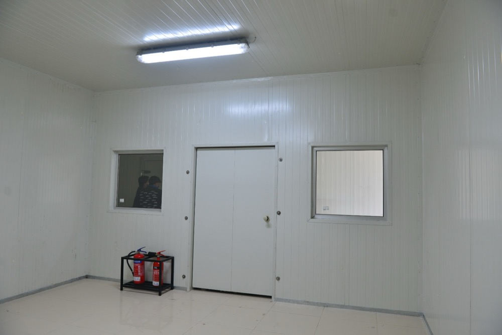
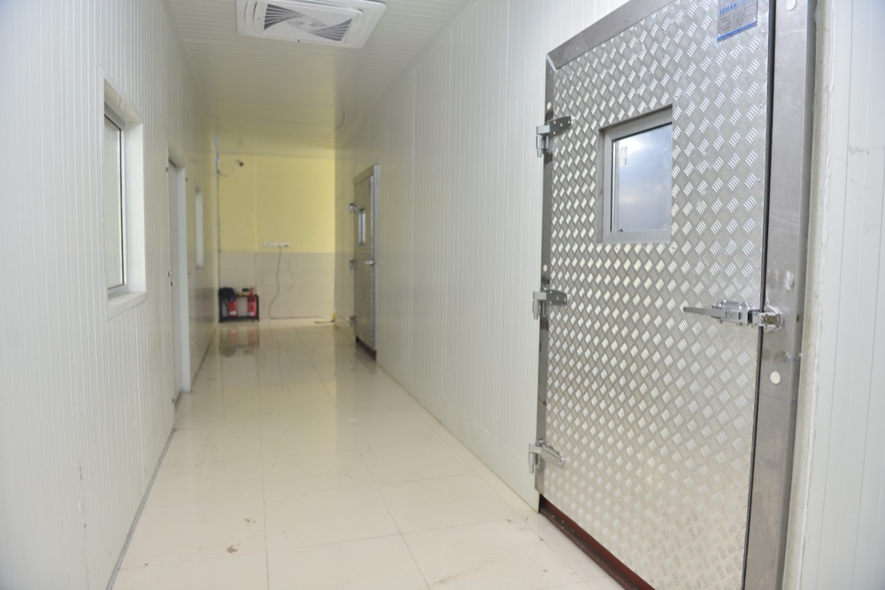
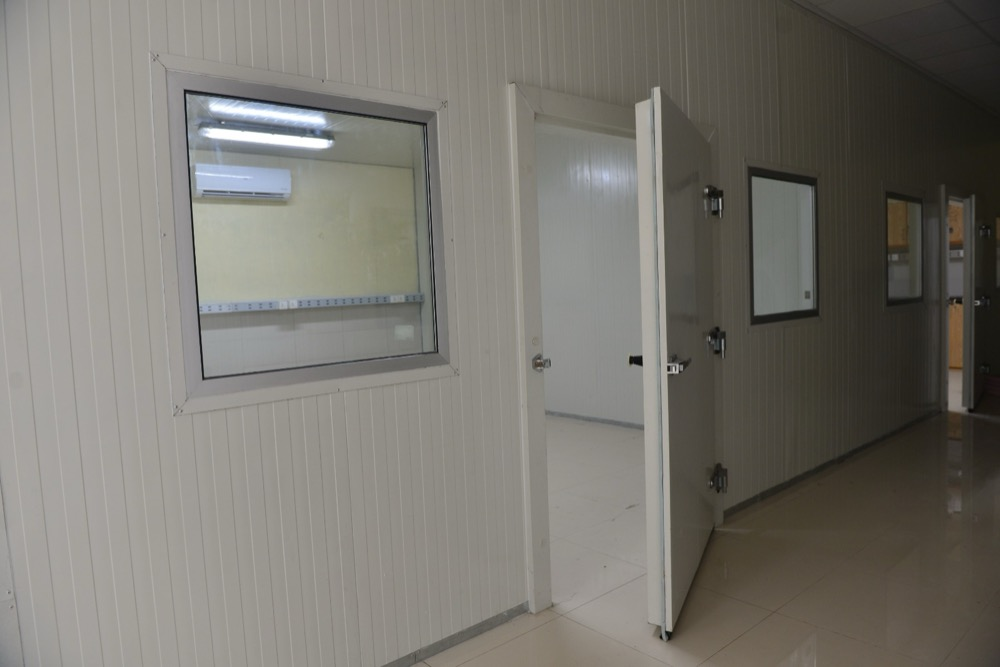
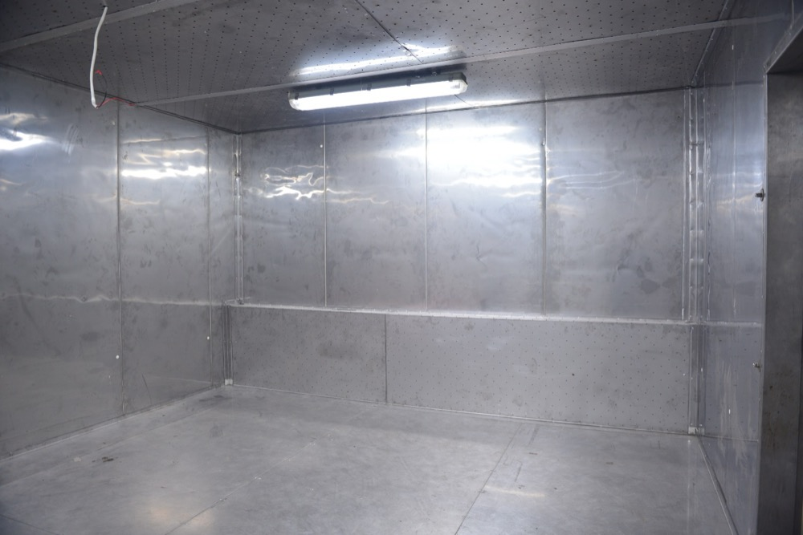
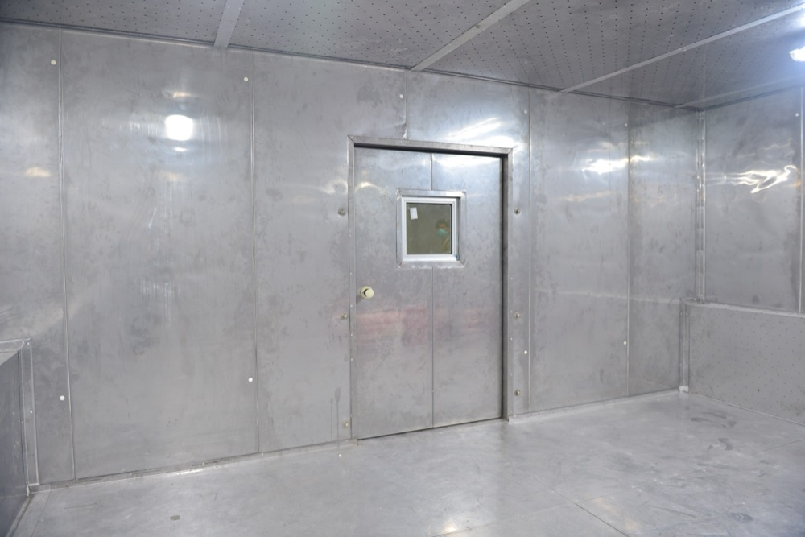
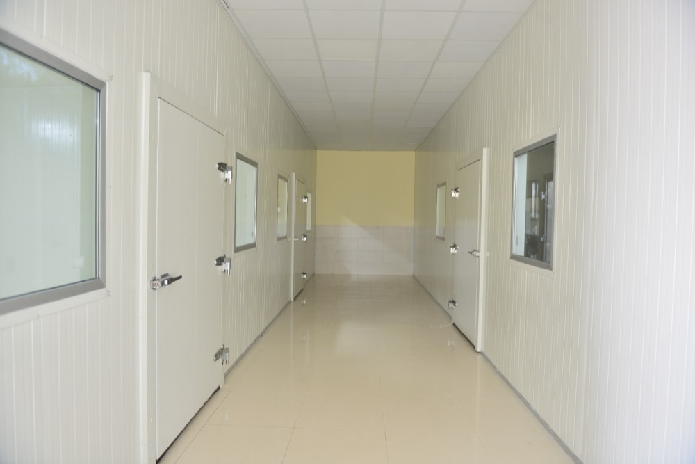

Haier Climate Test Lab, Lahore — PIR-clad environmental testing chambers for electronics and appliance reliability
Izhar Foster designed and built the climate-controlled environmental testing chambers inside Haier's Lahore manufacturing and QA facility. PIR-clad insulated rooms calibrated for IEC 60068 test profiles — temperature excursion across the operating envelope of consumer appliances and electronics, with controlled humidity, multi-point instrumentation, and Bitzer-based cascade refrigeration. The same engineering rigour we bring to cold storage and pharmaceutical cold rooms, applied here to electronics QA.

The cold-storage and refrigeration disciplines that build chillers, freezers, and pharmaceutical cold rooms are the same disciplines that build environmental testing chambers. The applications differ — instead of holding produce or vaccines, a climate test chamber holds appliances and electronics under stress — but the engineering principles are identical: insulated envelope, refrigeration plant, tight temperature control, instrumentation, and a long service life under continuous operation.
At Haier's Lahore facility, Izhar Foster brought that combined discipline to bear. The result is a set of PIR-clad climate test rooms calibrated to IEC 60068 environmental test profiles, used for the reliability testing of consumer appliances and electronics destined for Haier's Pakistani and regional markets. The rooms operate across a temperature envelope that conventional cold-storage facilities never see — both colder than freezer territory at the bottom end, and hotter than ambient at the top end — under tighter tolerance bands than any food or pharma cold storage requires.
What an environmental test chamber actually does
Consumer appliances and electronics are sold globally. A refrigerator, washing machine, or air conditioner manufactured in Lahore may end up in a household in Riyadh, Lagos, Karachi, or Dhaka. Each of those climates puts a different load on the product. A washing machine that performs flawlessly at +20°C ambient may fail at +50°C ambient if the inverter board's thermal management was untested. A refrigerator that holds setpoint at +25°C may fail at +45°C if the compressor staging logic was never validated against high-ambient conditions.
The role of the climate test chamber is to compress those climates into hours of testing. A chamber with a 24-hour cycling profile of −20°C → +50°C → +20°C → +35°C 90% RH simulates several years of real-world climate exposure, accelerating the discovery of weak points in the product design. Test profiles are written against:
- IEC 60068-2-1 / -2-2 / -2-14 — cold, dry heat, and rapid temperature change
- IEC 60068-2-30 / -2-78 — damp heat cyclic and steady state
- IEC 60068-2-38 — composite temperature/humidity cyclic
- IEC 60068-2-3 — long-term steady-state damp heat
- Manufacturer-internal test suites that often go further than the IEC baseline — Haier's internal QA discipline is among the more rigorous in the consumer-appliance industry
The Lahore chambers Izhar Foster built support the full envelope of these profiles, with the refrigeration capacity and humidification capability sized to the largest single test load Haier specified.
How a climate test chamber differs from a cold storage
The differences matter for engineering scope. Cold storage and climate test chambers share an envelope discipline (PIR sandwich panel walls, sealed coves, insulated doors), but five engineering parameters separate them:
| Parameter | Cold storage | Climate test chamber |
|---|---|---|
| Temperature envelope | −40°C to +25°C | −40°C to +85°C (some go to +180°C) |
| Humidity control | Uncontrolled or modest | 10–95% RH actively controlled |
| Tolerance band | ±2 to ±5 K | ±1 to ±2 K, sometimes tighter |
| Ramp rate | Slow (hours) | Fast (1–10 K/min typical) |
| Instrumentation | Few sensors, monitoring | Multi-point, ISO 17025 traceable |
| Refrigeration | Single-stage HFC or NH₃ | Cascade refrigeration below −40°C |
| Heating side | None typically | SCR-controlled electrical, sometimes IR |
| Door cycling | Multiple times per day | Per-test entry, then closed for hours-to-days |
| Humidity generation | n/a | Steam injection or wetted-coil |
| Calibration regime | Annual, single point | Multi-point, traceable, periodic |
Why PIR sandwich panels are the right envelope for climate testing
The same properties that make FireSafe PIR ideal for cold storage make it ideal for climate test chambers — and a few additional properties become more important:
Dimensional stability across the test envelope. A test chamber operating from −40°C to +85°C cycles through a 125 K range every cycle. Wood and gypsum-board construction simply cannot survive that thermal cycling without cracking, separating, and de-laminating over time. PIR sandwich panels — bonded steel facings on a polyisocyanurate foam core — handle the cycling indefinitely with dimensional drift below 1%.
Hygienic, easy-clean surface. Some climate testing programmes generate condensate (the damp-heat cyclic profile), which over weeks of testing creates moisture loads on the chamber interior. PIR's non-hygroscopic, non-porous surface stays dry, doesn't grow mould, and washes down without degrading.
Fire classification. Test chambers full of appliances under thermal stress occasionally fail in ways that involve fire — a faulty inverter board, a punctured Li-ion cell, an overloaded heater. FireSafe PIR's B1 fire classification (per ASTM E84) is exactly the envelope insurers and corporate safety teams require for testing-laboratory environments.
λ ≈ 0.022 W/m·K. Climate testing rooms run continuously for years. Heat-leak through the envelope translates directly to operating cost. PIR's thermal conductivity is roughly a third of EPS, meaning electricity consumption to hold setpoint is roughly a third lower across the chamber's life.
Refrigeration plant — what powers a climate chamber
Going below −40°C requires cascade refrigeration — two refrigeration circuits, one cooling the other, allowing the colder circuit to operate at lower pressures than a single-stage system can deliver. Bitzer compressors are the global standard for cascade plants, with paired R-404A or R-407C high-stage and R-23 or R-508B low-stage on lower-temperature setpoints. Above −40°C the chamber operates on a conventional single-stage system; below, the cascade engages.
The heating side is electrical — silicon-controlled rectifier (SCR) firing on banks of finned-tube heaters, modulated by the chamber controller to track the test profile. Cooling and heating frequently run simultaneously in a controlled way, with the controller balancing the two against the setpoint and the load.
Humidity is generated by either steam injection (a small steam boiler delivering controlled vapour into the chamber air stream) or by a wetted-coil arrangement (chilled water flowing over a coil exposed to the chamber air). Both are valid; the choice depends on the rate-of-change requirements of the test profile and the chamber's air-velocity design.
Photographs from the commissioned chamber





Where this fits Izhar Foster's portfolio of insulated-envelope work
The Haier Lahore climate test lab is one in a portfolio of insulated-envelope installations that Izhar Foster has delivered across Pakistan's industrial sectors:
- Beverage cold storage and QC labs — Coca-Cola TCCEC Lahore, Pepsi-franchise Naubahar Gujranwala
- Pharmaceutical cold storage — DRAP-validated cold rooms across Pakistan
- 3PL cold-chain logistics — Connect Logistics Karachi
- Agricultural post-harvest — USAID-funded banana ripening rooms in Sindh
- Controlled atmosphere stores — apple, mango, kinnow, and date storage with Fruit Control Italiana equipment
- Specialty insulated environments — climate test chambers, automotive paint booths, food-processing clean rooms, electronics burn-in chambers
The same engineering staff, the same FireSafe PIR sandwich panel manufacturing line, the same Bitzer-based refrigeration plant capability — applied across the temperature spectrum, across application classes, and across Pakistan's industrial geography.
If you're scoping a climate test chamber or specialty insulated environment
Climate test chambers, electronics burn-in rooms, automotive paint booths, food-processing clean rooms, pharmaceutical compounding suites, and any other specialty insulated environment all share an engineering vocabulary with cold storage. If your scope involves controlled temperature, controlled humidity, hygienic surfaces, fire-rated envelope, or all of the above — talk to us. The engineering team that builds Pakistan's largest cold stores is the same team that builds Pakistan's most demanding test environments.
Request a quote with your test envelope, room dimensions, and use case. Engineers respond within 24 hours.
Other PIR-clad insulated-environment projects in Pakistan.
How Haier sits within Izhar Foster's portfolio of named installations across Pakistan.
Coca-Cola TCCEC
High-bay drive-in pallet racking and ammonia-based finished-goods cold storage for Coca-Cola in Lahore.
02Pepsi · GujranwalaNaubahar Bottling Co.
PIR-clad bottling-plant cold storage and on-site quality-control laboratory environment for the Pepsi franchise in Gujranwala.
033PL · KarachiConnect Logistics
Multi-bay third-party cold-chain logistics warehouse with multiple loading docks and PIR roof-and-wall envelope.
04Agriculture · SindhUSAID Banana Ripening
Donor-funded banana ripening and cold storage rooms for farmer cooperatives in Sindh.
How much would your version cost?
See the cost breakdown for a PIR-clad climate test chamber or specialty insulated environment. Rough estimate only — exact cost will differ. ±20% indicative band, includes editable Izhar margin. Engineer validation required before quoting a customer.
Open the rough estimator →